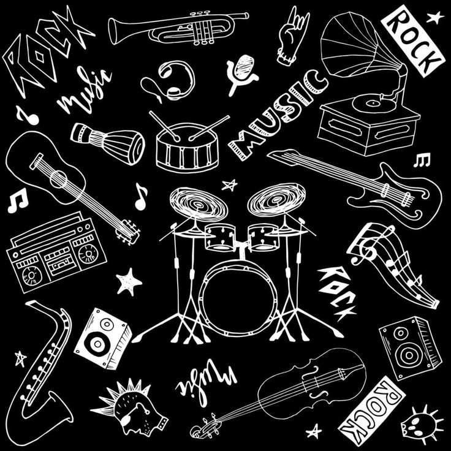

En la música moderna hay una gran variedad de estilos que conectan culturas, emociones y generaciones. Estos géneros dominan las plataformas digitales, reflejan cambios sociales y tecnológicos en el mundo.
El pop es un género accesible y versátil, cuenta con melodías pegajosas, estructuras simples y letras fáciles de recordar. En estas canciones se encuentran alegres, románticas o bailables. Por su capacidad para adaptarse a otros estilos es uno de los generos mas influyentes.
Este género se distingue por su ritmo pegajoso y letras con temas urbanos, fiestas o relaciones. Este transmite energia y conecta con raices latinas, siendo una forma de expresión cultural en la actualidad.
Es un género lírico, centrado en el ritmo y la palabra. Sus letras son reflexivas, críticas o narrativas. Incluye baile, arte y moda y este ha crecido gracias a su autenticidad y fuerza expresiva.

La música electrónica se basa en sonidos generados digitalmente. Es ideal para bailar o relajarse. Este tiene una gran variedad de subgéneros, desde lo enérgico hasta lo atmosférico y su producción ha revolucionado la música moderna.
Mantiene viva la esencia del rock con un enfoque más experimental y artístico. El género indie contiene letras profundas y sonidos auténticos.